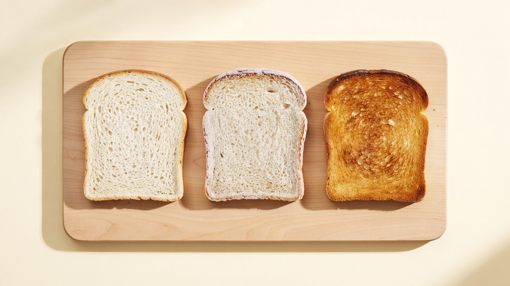

TazeDondurulmuşKızarmış
Kan şekeri yükselişi ne kadar azaldı?ev yapımı beyaz ekmek · 10 kişi
Dondur + çöz + kızart
−%39
Marketten alınan paket beyaz ekmekte de kızartmak işe yaradı: taze haline göre %28 daha az yükseliş. Dondurmak ek bir fayda sağlamadı.
KARAR: Gerçek, ama küçük bir etki.
- Çalışmalar az sayıda sağlıklı yetişkinle yapıldı.
- Beyaz ekmek dondurunca tam tahıllı ekmeğe dönüşmez; porsiyon hâlâ en önemlisi.
- Kolay bir ek adım: dilimle, dondur, yerken kızart. Yanına protein ve sebze ekle.